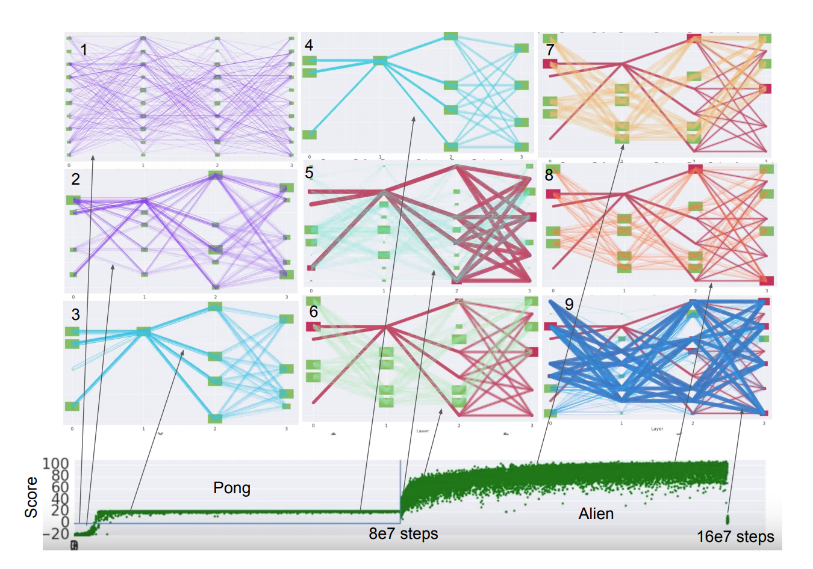

You're going to hear a lot about AGI this next year. Watch out for hype. Success on varied tasks is the litmus test.
Machines have achieved some impressive feats lately. They drive more safely than people do. They find skin cancer in cell phone photos. They beat the worlds best players at Go by a wide margin.
At the moment, AI is dominated by custom solutions. Most AI systems are built to work with one type of data, like pictures or sound. And most of those are customized to solve one particular problem. And many of those are optimized to do well on just a single data set.
AGI is the new AI
Actually, Artificial General Intelligence (AGI) is the old AI too. The early champions of AI envisioned machines that had a wide variety of human capabilities. That proved to be way harder than expected, and so research efforts focused on narrower problems that could show measurable progress within the span of a single research grant.

Still, an AI that can do many different things is way more powerful. A drone that can identify an endangered black rhinoceros is awesome, but a drone that could also tag poachers with tracking devices, then gently herd the rhinos away from them - that would be mind-blowing. The potential impact from systems that can solve several hard problems and adapt to unexpected circumstances is huge.
There have always been passion-driven researchers dedicated to the grand goal of making an artificial intelligence that is comparable to humans in breadth and adaptability. In the last few decades, this line of research has been given little money, and the attention it drew has been disdainful more often than laudatory. But now, at the simultaneous cresting of waves of entreprenurial interest, computing power and academic popularity, AGI is the next new thing. Many of the household names in AI and machine learning are working toward it in some way. AGI is mainstream again.
Unfortunately, building an AI that can do many things is hard. For the most part, AI today is a cooperative effort between engineers and computers. Domain experts build in as much knowledge as they can, giving the algorithms a running start on a long runway. Humans are part of the system. This doesn't scale well to systems that are intended to adapt on the fly and solve several unrelated problems. In AGI systems, the humans will have to take a step back and rely on the algorithms to handle everything, if for no other reason than humans won't know exactly what tricks and insights to program into the machine beforehand.
Becoming the best at one thing is not the way to become good at many things.
There are no clearly defined goals for AGI, other than to create something "intelligent". Philosophers and college admissions officers have been debating the nature of intelligence for years, but in this context intelligent usually means “good at things, compared to a human.“ For years chess was held up as the milestone which, once passed, would signal the arrival of machine intelligence. After it it was achieved, it suddenly seemed less impressive, in the same way a magician explaining an illusion robs it of mystery. This cycle was repeated with image classification, the game of Go and translation of the written word.
The downside of specific tasks, whether of athletics or intelligence, is that they inevitably emphasize just a few aspects of a complex phenomenon. Depending on the test you choose, the results will be very different. AlphaGo would be helpless at piloting an automobile. Michael Jordan is one of the best basketball players ever, but he was unimpressive at baseball. There is even an image categorization task in which rats routinely beat humans because the humans overthink, looking for a pattern where there is only randomness. The choice of task can completely change what we mean by intelligence.

The way around this is to measure performance on not just one task, but on many different ones. This is the approach taken by the decathlon, an athletic competition composed of ten separate events, including several variants of running, jumping and throwing. The world's best decathletes are good runners, jumpers and throwers, but they are not the best. They split their training across several different families of activities. Focusing on only one will detract catastrophically from their skill in others. Fred Rothganger coined the term universal suboptimality to describe this counterintuitive trade-off.
To protect ourselves from the temptation of focusing on just one task, AGI developers can benchmark their efforts on collections of tasks. There are several early candidates listed below, but the most important part aspect of an AGI task collection is that it touches on all the behaviors that we consider important. It becomes a machine decathlon and serves as an operational definition for machine intelligence.
Everyone is doing it
Research teams from most big tech companies, and from many other small ones, are contributing to the effort to build AGI. Here are a few examples.
Both Google DeepMind and Google Research have taken concrete steps toward AGI with PathNet, a scheme for training enormous, general neural networks, and evolutionary architecture search AutoML, a method for finding good neural net architectures for image classification.

GoodAI, a startup based in Prague, has created the General AI Challenge, a competition to build AGI with 5 million US dollars in prize money. It is sponsored by Microsoft and Nvidia among others. Phase one of the Challenge is based on CommAI environments, a set of challenging communications tasks created by Facebook's Artificial Intelligence Research group.
Microsoft Research reorganized this year into MSR AI to focus on "the foundational principles of intelligence" and "more general, flexible artificial intelligence."
The mission of OpenAI, which was co-founded and is co-chaired by Elon Musk of Tesla, is "to build safe AGI, and ensure AGI's benefits are as widely and evenly distributed as possible." It's funded in part by Amazon Web Services. In addition to enriching the field through research, OpenAI has contibuted two popular collections of tasks on which AGIs under development can test their skills: Gym and Universe.
There are plenty of grassroots, academic and garage-based efforts to build general AI as well. TPOT, an open-source tool developed by Randy Olson, is a great example of them. It is automates feature creation, model selection and parameter optimization. It is particularly laudable for being entirely open and well documented.
We are at the leading edge of the AGI trend. In 2018 a lot of other companies, big and small, will jump on the bandwagon. There will be a lot of noise and it will be tough to tell the substance from the fluff. Here’s what to watch for: demonstrated results from a single system on set of very different tasks. Elaborate theories of cognition are a dime a dozen. Superhuman performance on a single task, however cool, is not AGI. Look for the players, academic and corporate, who can show their ideas in action. And especially watch for any who are willing to share their code. That is the ultimate sign of confidence.
[Full disclosure: I work for Facebook, although I'm not part of FAIR and have no role in CommAI. Also, I am working on an open source AGI side project called Becca.]